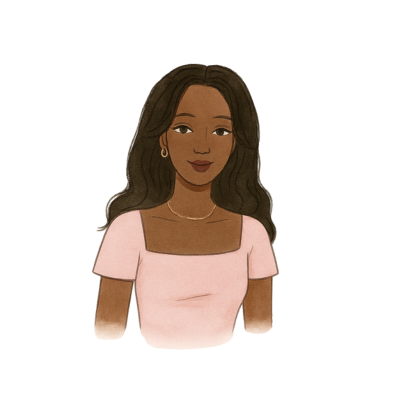

I design things
people actually use.
I'm Breanna — a UX designer and Computer Engineering senior at UMass Amherst. I got into this field because I kept watching people get frustrated by technology that should have been helping them. Bad onboarding, confusing navigation, interfaces that clearly weren't designed with real people in mind. I wanted to fix that.
What makes me a little different: I can build what I design. I've implemented full React Native apps, worked with ML model integrations, and shipped real prototypes — not just Figma files. That engineering background means I think about feasibility and edge cases from the start, not as an afterthought.
I want to work on consumer products — the kind that millions of people use every day, where a single design decision can affect how someone's morning goes.

What I bring
Most UX designers hand off a Figma file and hope engineers interpret it correctly. I've been on both sides of that handoff — and it's changed how I design.
I run real interviews, usability tests, and surveys — not just assumption-based personas. Every design decision I make has a citation.
That engineering background means I design with feasibility in mind from day one — no surprises at handoff, no designs that can't ship.
Contrast ratios, touch targets, cognitive load — these are part of my process from the first wireframe, not a checklist at the end.
Skills & tools
Outside of work
I'm a new aunt, which has already changed how I think about designing for people who aren't me. I hike when I can, pick up creative hobbies constantly, and genuinely love talking to people with completely different experiences and perspectives. It makes me a better researcher and, honestly, just a more curious person.
"I'm looking for a team where design and engineering actually talk to each other — and where the work ends up in front of real people."